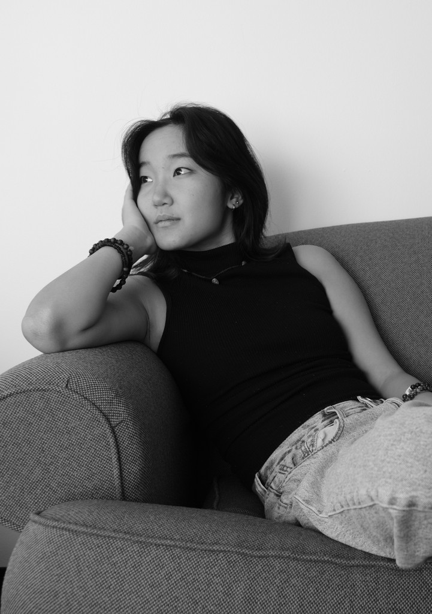

I'm Rose, a researcher and artist. I'm a graduate student at the University of Chicago (MAPSS, Comparative Human Development) and a researcher at NTU Singapore's SWEET Lab with Professor Renwen Zhang.
My research looks at how people learn, reflect, and make sense of themselves with AI — from the feedback AI gives learners to the harder experiences people have with AI companions.
Alongside research I make performance, sound, film, and photography. The art practice runs parallel to the research: a phenomenological way of asking the same questions about consciousness, embodiment, and identity.
My Journey
-
2026 – 2027
Education
University of Chicago
Master of Arts Program in the Social Sciences, Psychology
-
Summer 2026
Research
Nanyang Technological University — SWEET Lab
Research Assistant, advised by Professor Renwen Zhang
-
Apr 24 – May 8, 2025
Exhibition
FEMME Sound Art Exhibition — My Consciousness as Ocean
-
Mar 30 – Apr 12, 2025
Exhibition
Link Auditorium Art Exhibition — Eternity in a Moment
-
Summer 2025
Research
University of California, Santa Barbara — Human-AI Experience (HAX) Lab
Research Assistant, advised by Professor Misha Sra
-
Oct 28, 2024
Exhibition
Future Forms: AI in Art Student Show — Metamorphosis
-
Oct 10 – 18, 2024
Exhibition
IEEE VIS Art Program 2024 — Space Time Dialogue
-
2022 – 2026
Education
Washington University in St. Louis
B.S. in Computer Science. Second major in Philosophy-Neuroscience-Psychology; minors in Human-Computer Interaction and Studio Art.